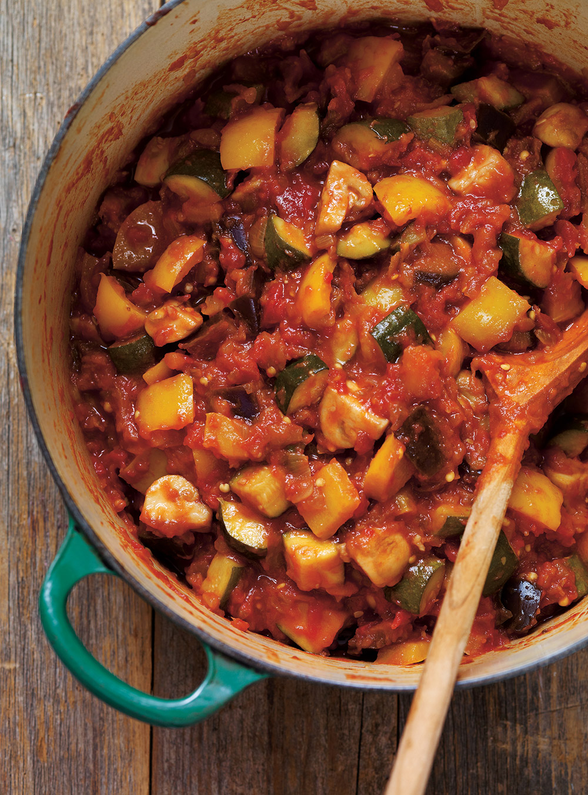

French Ratatouille Recipe

Ingredients:
- 1 eggplant, diced
- 1 zucchini, diced
- 1 yellow squash, diced
- 2 bell peppers, diced
- 1 onion, diced
- 4 cloves of garlic, minced
- 1 can of diced tomatoes
- 1/4 cup of olive oil
- 1 tsp of Herbs de Provence
- Salt and pepper to taste
Instructions:
- Heat the olive oil in a large pot or Dutch oven over medium heat.
- Add the onion, bell peppers, and garlic, and sauté until softened.
- Add the eggplant, zucchini, yellow squash, diced tomatoes, Herbs de Provence, salt, and pepper. Stir to combine.
- Reduce heat to low and let simmer for 30 minutes, or until the vegetables are tender.
- Serve warm, garnished with fresh basil or parsley if desired.